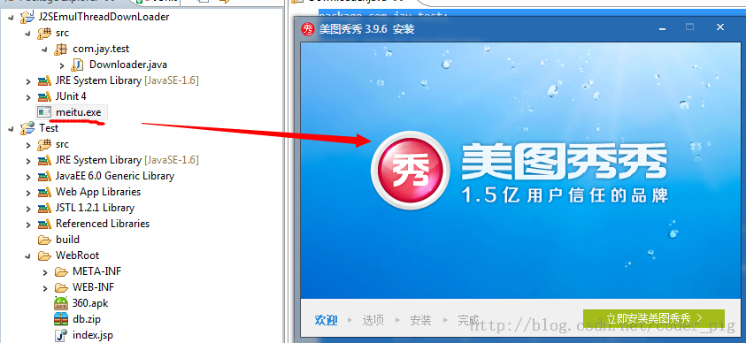

一、本节引言：
又是一个深坑，初学者慎入...本节将从普通的单线程下载 -> 普通多线程下载 -> -> 以及一个很实用的例子：利用Android那只DownloadManager更新apk 并覆盖安装的实现代码！好的，这样看上去，本节还是蛮有趣的，开始本节内容！ PS:我们把整个完整的多线程断点续传放到下一节中！
二、普通单线程下载文件：
直接使用URLConnection.openStream()打开网络输入流,然后将流写入到文件中！
核心方法：
public static void downLoad(String path,Context context)throws Exception {
URL url = new URL(path);
InputStream is = url.openStream();
//截取最后的文件名
String end = path.substring(path.lastIndexOf("."));
//打开手机对应的输出流,输出到文件中
OutputStream os = context.openFileOutput("Cache_"+System.currentTimeMillis()+end, Context.MODE_PRIVATE);
byte[] buffer = new byte[1024];
int len = 0;
//从输入六中读取数据,读到缓冲区中
while((len = is.read(buffer)) > 0)
{
os.write(buffer,0,len);
}
//关闭输入输出流
is.close();
os.close();
}
运行结果：
三、普通多线程下载：
我们都知道使用多线程下载文件可以更快地完成文件的下载,但是为什么呢?
答：因为抢占的服务器资源多,假设服务器最多服务100个用户,服务器中的一个线程 对应一个用户100条线程在计算机中并发执行,由CPU划分时间片轮流执行,加入a有99条线程 下载文件,那么相当于占用了99个用户资源,自然就有用较快的下载速度
PS:当然不是线程越多就越好,开启过多线程的话,app需要维护和同步每条线程的开销, 这些开销反而会导致下载速度的降低,另外还和你的网速有关!
多线程下载的流程：
- 获取网络连接
- 本地磁盘创建相同大小的空文件
- 计算每条线程需从文件哪个部分开始下载，结束
- 依次创建，启动多条线程来下载网络资源的指定部分
PS:这里直接创建一个Java项目，然后在JUnit里运行指定方法即可，
核心代码如下：
public class Downloader {
//添加@Test标记是表示该方法是Junit测试的方法,就可以直接运行该方法了
@Test
public void download() throws Exception
{
//设置URL的地址和下载后的文件名
String filename = "meitu.exe";
String path = "http://10.13.20.32:8080/Test/XiuXiu_Green.exe";
URL url = new URL(path);
HttpURLConnection conn = (HttpURLConnection) url.openConnection();
conn.setConnectTimeout(5000);
conn.setRequestMethod("GET");
//获得需要下载的文件的长度(大小)
int filelength = conn.getContentLength();
System.out.println("要下载的文件长度"+filelength);
//生成一个大小相同的本地文件
RandomAccessFile file = new RandomAccessFile(filename, "rwd");
file.setLength(filelength);
file.close();
conn.disconnect();
//设置有多少条线程下载
int threadsize = 3;
//计算每个线程下载的量
int threadlength = filelength % 3 == 0 ? filelength/3:filelength+1;
for(int i = 0;i < threadsize;i++)
{
//设置每条线程从哪个位置开始下载
int startposition = i * threadlength;
//从文件的什么位置开始写入数据
RandomAccessFile threadfile = new RandomAccessFile(filename, "rwd");
threadfile.seek(startposition);
//启动三条线程分别从startposition位置开始下载文件
new DownLoadThread(i,startposition,threadfile,threadlength,path).start();
}
int quit = System.in.read();
while('q' != quit)
{
Thread.sleep(2000);
}
}
private class DownLoadThread extends Thread {
private int threadid;
private int startposition;
private RandomAccessFile threadfile;
private int threadlength;
private String path;
public DownLoadThread(int threadid, int startposition,
RandomAccessFile threadfile, int threadlength, String path) {
this.threadid = threadid;
this.startposition = startposition;
this.threadfile = threadfile;
this.threadlength = threadlength;
this.path = path;
}
public DownLoadThread() {}
@Override
public void run() {
try
{
URL url = new URL(path);
HttpURLConnection conn = (HttpURLConnection) url.openConnection();
conn.setConnectTimeout(5000);
conn.setRequestMethod("GET");
//指定从什么位置开始下载
conn.setRequestProperty("Range", "bytes="+startposition+"-");
//System.out.println(conn.getResponseCode());
if(conn.getResponseCode() == 206)
{
InputStream is = conn.getInputStream();
byte[] buffer = new byte[1024];
int len = -1;
int length = 0;
while(length < threadlength && (len = is.read(buffer)) != -1)
{
threadfile.write(buffer,0,len);
//计算累计下载的长度
length += len;
}
threadfile.close();
is.close();
System.out.println("线程"+(threadid+1) + "已下载完成");
}
}catch(Exception ex){System.out.println("线程"+(threadid+1) + "下载出错"+ ex);}
}
}
}
运行截图：
如图,使用多线程完成了对文件的下载!双击exe文件可运行,说明文件并没有损坏!

注意事项：
- int filelength = conn.getContentLength(); //获得下载文件的长度(大小)
- RandomAccessFile file = new RandomAccessFile(filename, "rwd"); //该类运行对文件进行读写,是多线程下载的核心
- int threadlength = filelength % 3 == 0 ? filelength/3:filelength+1; //计算每个线程要下载的量
- conn.setRequestProperty("Range", "bytes="+startposition+"-"); //指定从哪个位置开始读写,这个是URLConnection提供的方法
- //System.out.println(conn.getResponseCode()); //这个注释了的代码是用来查看conn的返回码的,我们前面用的都是200, 而针对多线程的话,通常是206,必要时我们可以通过调用该方法查看返回码！
- int quit = System.in.read();while('q' != quit){Thread.sleep(2000);} //这段代码是做延时操作的,因为我们用的是本地下载,可能该方法运行完了,而我们的 线程还没有开启,这样会引发异常,这里的话,让用户输入一个字符,如果是'q'的话就退出
四、使用DownloadManager更新应用并覆盖安装：
下面的代码可以直接用，加入到项目后，记得为这个内部广播注册一个过滤器：
AndroidManifest.xml
import android.app.DownloadManager;
import android.content.BroadcastReceiver;
import android.content.Context;
import android.content.Intent;
import android.content.pm.ApplicationInfo;
import android.content.pm.PackageManager;
import android.database.Cursor;
import android.net.Uri;
import android.os.Bundle;
import android.os.Environment;
import android.support.v7.app.AppCompatActivity;
/**
* Created by Jay on 2015/9/9 0009.
*/
public class UpdateAct extends AppCompatActivity {
//这个更新的APK的版本部分，我们是这样命名的:xxx_v1.0.0_xxxxxxxxx.apk
//这里我们用的是git提交版本的前九位作为表示
private static final String FILE_NAME = "ABCDEFGHI";
@Override
public void onCreate(Bundle savedInstanceState) {
super.onCreate(savedInstanceState);
String endpoint = "";
try {
//这部分是获取AndroidManifest.xml里的配置信息的，包名，以及Meta_data里保存的东西
ApplicationInfo info = getPackageManager().getApplicationInfo(
getPackageName(), PackageManager.GET_META_DATA);
//我们在meta_data保存了xxx.xxx这样一个数据，是https开头的一个链接，这里替换成http
endpoint = info.metaData.getString("xxxx.xxxx").replace("https",
"http");
} catch (PackageManager.NameNotFoundException e) {
e.printStackTrace();
}
//下面的都是拼接apk更新下载url的，path是保存的文件夹路径
final String _Path = this.getIntent().getStringExtra("path");
final String _Url = endpoint + _Path;
final DownloadManager _DownloadManager = (DownloadManager) getSystemService(DOWNLOAD_SERVICE);
DownloadManager.Request _Request = new DownloadManager.Request(
Uri.parse(_Url));
_Request.setDestinationInExternalPublicDir(
Environment.DIRECTORY_DOWNLOADS, FILE_NAME + ".apk");
_Request.setTitle(this.getString(R.string.app_name));
//是否显示下载对话框
_Request.setShowRunningNotification(true);
_Request.setMimeType("application/com.trinea.download.file");
//将下载请求放入队列
_DownloadManager.enqueue(_Request);
this.finish();
}
//注册一个广播接收器，当下载完毕后会收到一个android.intent.action.DOWNLOAD_COMPLETE
//的广播,在这里取出队列里下载任务，进行安装
public static class Receiver extends BroadcastReceiver {
public void onReceive(Context context, Intent intent) {
final DownloadManager _DownloadManager = (DownloadManager) context
.getSystemService(Context.DOWNLOAD_SERVICE);
final long _DownloadId = intent.getLongExtra(
DownloadManager.EXTRA_DOWNLOAD_ID, 0);
final DownloadManager.Query _Query = new DownloadManager.Query();
_Query.setFilterById(_DownloadId);
final Cursor _Cursor = _DownloadManager.query(_Query);
if (_Cursor.moveToFirst()) {
final int _Status = _Cursor.getInt(_Cursor
.getColumnIndexOrThrow(DownloadManager.COLUMN_STATUS));
final String _Name = _Cursor.getString(_Cursor
.getColumnIndexOrThrow("local_filename"));
if (_Status == DownloadManager.STATUS_SUCCESSFUL
&& _Name.indexOf(FILE_NAME) != 0) {
Intent _Intent = new Intent(Intent.ACTION_VIEW);
_Intent.setDataAndType(
Uri.parse(_Cursor.getString(_Cursor
.getColumnIndexOrThrow(DownloadManager.COLUMN_LOCAL_URI))),
"application/vnd.android.package-archive");
_Intent.addFlags(Intent.FLAG_ACTIVITY_NEW_TASK);
context.startActivity(_Intent);
}
}
_Cursor.close();
}
}
}
五、参考代码下载：
普通单线程下载文件：DownLoadDemo1.zip 普通多线程下载文件：J2SEMulDownLoader.zip
六、本节小结：
好的，本节给大家介绍了普通单线程以及多线程下载文件，还有利用Android自带DownManager来 下载更新APK，然后覆盖的实现！相信会对大家的实际开发带来便利，好的，就说这么多，谢谢~